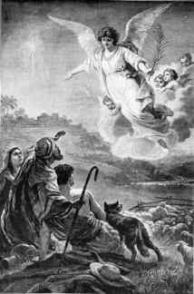

Au Commencement Était le Verbe

Une Grande Entrée?
Chaque Décembre, nous commençons à anticiper la plus grande fête de l'année: la Noël! Tous les magasins sont illuminés par les lumières et les guirlandes de la Noël, nous guirlandes lumineuses autour de nos maisons et décorer un arbre, et meme les rues de nombreuses villes brillent de lumières scintillantes autour de des bâtiments. Et la plus grande excitation de tous? Le cadeaux! Que allons nous obtenir? Sera-ce ce que l'ont espéré? Nous ne pouvons pas attendre pour le 25 Décembre!

Une Entrée Très Calme
Alors, est ce la façon dont cela s'est passé il ya 2000 ans? Est-ce que les gens attendent impatiemment: avaient-ils décoré leur maisons toutes en prévision de la naissance de Jésus? Avaient ils acheté des cadeaux pour l’un l'autre pour célébrer cette naissance tellement attendue? Quand Il est né, y avait'il une annonce parmi tout dans le monde que le Sauveur était enfin venu?
Pas tout à fait.
Quand Jésus fu né en Bethléem, aussi appelée la Ville de David (vous souvenez-vous?), seulement quelques personnes étaient vraiment au courant. Il y avait Marie, la mère de Jésus, et Joseph, son fiancé. Les personnes a qui possédaient à l'écurie de l'auberge où Marie et Joseph logeaient étaient probablement au courant que la femme avait donnèe naissance, mais n’avaient aucune la signification particulière pour les.
Mais il eut une grande joie dans le ciel, nous le savons, parce que Luc 2:8-14 nous dit que un grand groupe d'anges apparut à des bergers dans la nuit de la naissance de Jésus. Ils ont non seulement annoncé un petit garçon nommé Jésus était né, mais ils effectivement proclamé qu'Il était le Messie que les Juifs avaient en attente depuis si longtemps!
Mais il serait trente ans avant tout le monde commençait à trouver que sur.

Quatre Hommes, Quatre Histoires
Dans les années qui suiven la mort, la résurrection et l'ascension de Jésus au ciel, quatre hommes différents fu inspirés à écrire sur la vie de Jésus. Les quatre premiers livres du Nouveau Testament sont nommés pour les hommes qui ont écrit cetie biographies (ils sont généralement appelé Évangiles): Matthieu, Marc, Luc et Jean.
Ils n'ont pas discuté avec l’un l'autre; ils peuvent même ne pas avoir su que quelqu'un d'autre a été écrit l'histoire de Jésus. Matthieu, Luc et Jean avaient presque certainement lu l'Evangile de Marc; les chercheurs croient qu'il a été la toute première biographie de Jésus a été écrite. Mais les quatre évangiles ont été écrits indépendamment les uns des autres.

Quand une personne raconte une histoire sur un événement, il ou elle sera généralement essayer de comprendre ce qui, à leur avis, sont les parties les plus importantes. Ce fut le cas avec Matthieu, Marc, Luc et Jean. Certains comprennent des événements que d'autres ne le font pas; ils se rapportent les événements dans un ordre légèrement différent.
Par exemple, seulement Matthieu et Luc racontent l'histoire de la naissance de Jésus. Peut-être, dans l'esprit de Luke, il était important que les gens sachent que Jésus est né d'une jeune fille vierge. Le fiancé de Marie, Joseph, n'était pas le père de Jésus; Jésus était le fils de Dieu. (Luc 1:26-38)
L'évangile de Matthieu commence avec la généalogie de Jésus. Vous souvenez-vous comment, en ce moment il ya longtemps, Dieu promis à Abraham que le monde serait béni par un roi qui viendrait de ses descendants (Genèse 12:3)? Matthieu prend soin de nous montrer que Jésus était un descendant direct du roi David, qui était un descendant direct d'Abraham. Jésus était l'accomplissement de cette promisse ancienne.
Dans le cas de Marc et Jean, ils semblent tenir pour acquis que, quand ils ont écrit au sujet de Jésus que c'est entendu que les lecteurs savent qui ils parlaient: En Son temps, Jésus était très, très célèbre. Ainsi, Marc et Jean commencent leurs histoires de Jésus au moment où il a commencé son ministère surterre, c'est-à-dire, quand Jésus a l’age d’environ trente ans.

Un Messie Inattendu
Lorsque nous avons appris des prophètes qui ont prédit qu'Israël allait tomber saus l'Assyrie et Babylone, nous avons également appris que ces mêmes prophètes avaient prédit qu'un Roi, un Messie, un Sauveur, vien drait de la ligne du roi David. Ces prophécies ont donné aux Juifs l’esperance qu'Israël deviendrait à nouveau une grande nation, qu'un roi viendrait à conquerire tous les ennemis d'Israël et en faire une super-puissance qui régnerait toutr le monde.
Mais les Juifs ne sont pas en train de lire TOUTES les prophéties; ou, si elles étaient, ils ont été grandement comprennent mal certains d'entre eux. Les prophètes ont donné deux descriptions du Messie que Dieu enverrait. L'une été, en effet, d'un Souverain puissant. Qu'est-ce que les Juifs n'ont pas compris, c'est que ce roi viendrait d'un endroit le plus banal et qu’Il ne viendrait pas en grande pompe (vous vous souvenez de la nuit calme dans le obscure, petite Bethléem?). Ce nouveau roi serait un homme qui connaitrait la douleur, la peine et la douleur, la gloire et la puissance royale ne.
Comme un peuple démoralisé et vaincus, les juifs n'attendaient pas un Messie à venir comme l'humble personne que Jésus était; ils cherchaient quelqu'un beaucoup plus spectaculair que Lui.
Et c'est ainsi que, quand Jésus est venu et a vécu parmi eux, ils ne le reconnaissent pas le Messie quand ils le virent.

L'Enseignement de Jésus
Rappelez-vous que Jésus a grandi dans un endroit qui était sous la domination d'un autre pays: à cette époque, il était le puissant Empire romain. Jésus a grandi dans une société très simple; ils étaient très profondément religieux, et Ses voisins étaient des agriculteurs ou des pêcheurs ou des commerçants (Joseph, le mari de Sa mère, était un charpentier de métier).
Peut-être à cause de cela, Jésus a essayé d'enseigner des vérités spirituelles en racontant des histoires, appelé paraboles, que souvent impliqués choses que les gens dans sa société aurait été familier avec et compris:

- un fermier plantant la semence dans son champ (Matthieu 13:2-23)
- un fils qui se rebelle contre ses parents, mais retourne avec beaucoup de remords pour ses péchés (Luc 15:11-32)
- un berger qui perd un de ses moutons (Matthieu 18:10-14)
Les Pharisiens
Au temps de Jésus, les prêtres (la Bible les appelle aussi Pharisiens— un mot qui signifie «ceux séparés») dominaient de la vie quotidienne des Juifs. Les prêtres viennent de l'une des douze tribus d'Israël que Dieu avait choisi spécifiquement pour ce rôle: les Lévites (de la tribu de Lévi). Ils consideraient que leur travail etait de garder le peuple juif de s'égarer comme ils l'avaient fait dans le passé. C'était leur travail, ils pensaient, de lire et à interpréter la Bible pour le peuple. (Vous vous rappelez ce que nous disions plus tôt au sujet de la façon dont de Dieu intention de la Bible pour tout le monde?)
Jésus n'était pas de la tribu de Lévi, ainsi Jésus n'était pas un prêtre.

Pour être un rabbin, ou bien un enseignant de vérités et de connaissances bibliques, un homme devait etudier une longue période de formation dans une école spéciale rabbinique. Jésus n'avait pas été à une école rabbinique, de sorte que les Pharisiens ne lui “qualifié” considèrent comme un enseignant.
De sorte, presque dès le début de son ministère, Jésus était en conflicte avec les chefs religieux. Des foules de personnes se rassemblaient pour entendre Jésus enseigne. Dans une de ses séries les plus célèbres d'enseignements, appelé Le Sermon sur le Montagne (il peut être trouvé dans les deux Matthieu 5 et Luc 6), pratiquement tous les points Il a fait allait à l'encontre de ce que les pharisiens aurait les gens croient.

Parmi les idées principales que Jésus voulait que ses disciples à apprendre inclus:
- Dieu aime les gens et veut qu'ils l'aiment en retour. Une des façons de montrer l'amour de Dieu c’est d’obeir non seulement la lettre de la loi, mais l'esprit aussi bien. De sorte, ainsi d'être honnête, Jésus dit à ses disciples d'être miséricordieux, bon et justes.
- Jésus veut que ses disciples sait connus par leur amour: l'amour pour les coreligionnaires, que l'amour même pour leurs ennemis. Dieu a promis de nous pardoner les croyants de leurs péchés; Il veut que nous pardonnons les uns des autres.
La chose la plus importante que Jésus voulait que ses disciples savent, c'est que Lui, Jésus, etait le Fils de Dieu, et que le pardon du péché ne vient que par Lui. Un des plus célèbres versets dans la Bible déclare la Nouvelle Alliance de Dieu avec l'humanité (Jean 3:16):
Car Dieu a tant aimé le monde qu'il a donné son Fils unique, afin que quiconque croit en lui ne périsse point, mais qu'il ait la vie éternelle.
Cette déclaration de Jésus était révolutionnaire pour deux raisons: en premier lieu, l'idée que Jésus était le Fils de Dieu était inacceptable pour beaucoup Juifs. Comment un simple homme pourrait être Dieu? La deuxième idée que les dirigeants religieux du temps de Jésus ne pouvaient pas accepter, c'est que le salut n'est plus réservé pour les Juifs seulement. Jésus a dit que QUICONQUE croit en Lui peut appartenir au Royaume de Dieu (Jean 1:12).
Les Sadducéens
Les Sadducéens, un groupe de premier plan, souvent riche Juifs qui ont vécu à l'époque de Jésus, avaient une sorte d'arrangement politique avec les Romains, que sils jouissaient d'une certaine quantité de puissance politique. Les Sadducéens avaient parfois la tâche de la collecte des impôts Romains contre leurs compatriotes Juifs, et souvent étaient malhonnêtes, et ils obligaient les gens à payer plus que ce qui était effectivement dû afin qu'ils puissent garder une part pour eux-mêmes. Les Sadducéens étaient considérés comme des traîtres par beaucoup de personnes Juives en raison de leurs liens étroits avec les Romains détestés.
Il y avait souvent parler de rébellion chez les Juifs; ils irritaient sous la dureté de la domination romaine. Les Sadducéens considéraient comme leur travail de maintenir la paix entre les Juifs et les Romains. Le moins de mal à les Juifs a provoqué les Romains, de sorte que les Sadducéens pensé, le plus il sera facile pour tout le monde.
Le Problème Avec Jésus
Comme nous l'avons vu avant, Jésus est allé sur l'enseignement aux foules de gens et a répandre la bonne nouvelle à tout le monde au sujet de Dieu et de son amour. Les Pharisiens n'aimaient pas tout cela; ils voulaient être la seule autoritèe religieuse entre les Juifs. Jésus enseignait les gens a réfléchir plus profondément aux questions spirituelles ce que les prêtres n'avaient jamais fait, et ils l'aimaient pour cela.

Les Sadducéens n'aimaient pas les foules que Jésus attirait, soit. Une foule de gens ne pouvaient pas être contrôlèe facilement. Si Jésus voulait que les foules autour de lui le suivre dans une rébellion contre Rome, que pouvaient-ils faire pour l'empêcher? Les Sadducéens savait que même une grande foule de Juifs a pas de match pour la puissance de l'armée Romaine?
Si les Romains avaient pour réprimer une rébellion juive, ils les seraient absolument écraser (et environ 35 ans après la vie terrestre de Jésus, c'est exactement ce qu'ils ont fait). Leur pouvoir politique serait rien avec les Romains plus signifier, et les Sadducéens étaient pas sur le point de perdre leur pouvoir en raison d'une personne insignifiante démagogie comme Jésus!

L'absolu pire chose que Jésus a fait, cependant, c’était de proclamer qu'il était réellement le Fils de Dieu. Jésus leur dit qu'il était le Messie qu'ils attendaient depuis si longtemps. Pour les Pharisiens, c'était blasphèmie (le plus grand manque de respect enver Dieu)! Selon la loi juive, c’était un crime punissable par la mort.
Maintes et maintes fois, Jésus avait accompli signes et des miracles pour soutenir Sa prétention d'être le Messie: Il a guéri les malades, fait voir les aveugles, et les boiteux causé à marcher de nouveau. Il avait même soulevé un homme d'entre les mortst!
Jésus a été perçu comme une menace à la fois pour les Pharisiens (parce qu'ils avaient peur que les gens douteraient de leur autorité) et puis les Sadducéens (parce qu'il pourrait être une menace contre leur pouvoir).
Les Pharisiens et les Sadducéens n'étaient pas normalement amical ou de coopération avec l'autre, mais maintenant avaient un ennemi commun: Jésus.

Une nuit, alors que Jésus était en prière, Judas Iscariot, un homme qui avait été dans la cercle le plus proche a Jésus d'amis (ses douze disciples), a dirigé un groupe de Pharisiens et des Sadducéens là où il savait que Jésus allait prier, le Jardin de Gethsémané. Jésus n'a pas résisté à être arrêté, bien qué Il savait qu'il n'avait commis aucun crime.
Les accusateurs de Jésus l'emmenèrent à Caïphe, le grand prêtre du temple, pour mener un procès secret. Ils ont dit Caïphe decida que Jésus était coupable de blasphèmie à cause de Sa prétention à d’être le Messie.

Comme Il se tenait devant le Grand Prêtre, Jésus a dit, «Je suis le Messie, et vous me verrez assis à la droite de Dieu.» (Marc 14:62)
Bien que de faux témoins ont été réunis pour donner des «preuves» contre Jésus, Caïphe a décidé que la déclaration de Jésus était un aveu de culpabilité. Son verdict fut que Jésus doit être mis à mort.
Les Juifs ne pouvaient pas procéder à la peine capitale sans la permission du gouverneur Romain, Ponce Pilate. Les prêtres ont apporté Jésus devant Pilate et lui dit que Jésus avait commis trahison.
Si Il a prétendu être le Messie, ils ont dit, que c'était la même chose que dire qu’Il était le Roi des Juifs. Selon le loie Romaine, on ne pouvait s’appelet un roi éxcepté César.
Pilate ne pensait pas vraiment que Jésus faisait une revendication sérieuse pour être roi, car Il n'a même pas offert une défense pour Lui-même comme il a été jugé. Mais les prêtres Juifs ont insisté pour que Jésus soit mis à mort. Même lorsque Pilate leur a offert un choix d'avoir un meurtrier condamné, Barabbas, libéré, ou d'avoir Jésus libéré, les gens crièrent tous que Jésus soit mis à mort. (Marc 15:6-13)

Jésus Meurt et Puis Est Ressuscité
La crucifixion était une forme de peine capitale couramment utilisé par les Romains. C'était une façon la plus honteuse de mourir. Bien que Jésus est souvent présente dans les peintures avec un pagne, effectivement Il a été dépouillé de Ses vêtements, afin qu'il était nu aux yeux de tous. Il été en particulier humilié a cause que la crucifixion était réservĕe par les Romains pour les pires des criminels.
Après une nuit d'être battu, d'abord par Ses accusateurs Juifs et ensuite par les gardes Romains, Jésus a été forcé de porter Sa propre croix jusqu’à l'endroit où Il allait être crucifié. Il était si faible de tous ses coups qu'il ne pouvait pas supporter le poids de la croix; un esclave qui passaient le long du chemin a été oblige a porter la croix de Jésus pour Lui.
Quand ils sont arrivés aux lieu de la crucifixion, les gardes Romains cloué les mains et les pieds de Jésus sur la croix. Les soldats ont jouaient les lots pour les vêtements qu'ils avaient pris de Lui.
Généralement, sa prennait plusieurs jours intense d’souffrance pour mourir sur une croix. Les blessures de Jésus et la perte de sang à partir de la nuit avant probablement hâté Sa mort. Il est mort le même jour Il a été cloué sur la croix.

Alors que la plupart des amis de Jésus l'avait abandonné quand Il fut arrêté dans le Jardin de Gethsémané, il y avait un homme du nom de Joseph d'Arimathie qui a eu le courage d'aller à Pilate pour demander le corps de Jésus afin qu'il puisse être correctement enterré.
Il enveloppa le corps de Jésus en lin et l'a mis dans une tombe qui avait été taillé dans la roche. Il a ensuite roulé une grande pierre à l'entrée et continua son chemin.
Jésus avait essayé de dire à ses disciples à plusieurs reprises qu'il devait mourir comme sacrifice final pour les péchés de l'humanité, mais ils ne l'avais jamais compris. Si Jésus était le Fils de Dieu, pensaient-ils, s'Il était le Messie promis de Dieu, comment pourrait-Il jamais mourir?
Le troisième jour après la mort de Jésus, certaines des femmes qui avaient été Ses amis sont allés au tombeau où Il avait été enterré. C'était la coutume Juive pour oindre un corps avec certaines épices pour l'enterrement. Comme ils allaient, ils se demandaient entre eux -mêmes comment ils allaient déplacer la pierre qui avait été roulèe devant le tombeau.

Quand les femmes fut arrivèes, ils fut surprises de voir que la pierre avait déjà été roulée et le tombeau était vide!
Un ange, qui était assis sur le sol où le corps de Jésus avait été, leur dit, «Ne pas avoir peur! Jésus est ressuscité d'entre les morts, tout comme Il a dit qu'Il!» L'ange dit aux femmes de retourner à leurs amis et pour leurs dire la bonne nouvelle que Jésus etait ressuscité d'entre les morts. (Marc 16:6-7)
Tout comme les Juifs célèbrent la Pâque chaque année pour commémorer la libération de l'ésclavage en Egypte, les Chrétiens célèbrent le dimanche de Pâques comme l'événement le plus glorieux de l'histoire: Jésus est ressuscité d'entre les morts, la conquête de la puissance de la mort contre l'humanité et de fournir le pardon pour nos péchés une fois pour toutes!
Naturellement, les amis de Jésus ne pouvait pas le croire quand ils appris que Jésus n'était plus dans Sa tombe.
Mais Jésus apparut aux onze disciples restants à plusieurs reprises après sa résurrection. Il a passé une bonne partie de temps a leur parler comment Il avait été l'accomplissement de tant de prophéties, et leurs yeux enfin se sont ouvert à toutes les vérités que Jésus avait essayé de leur dire avant Sa crucifixion. (Luc 24:27)

Jésus Monte au Ciel
Jésus a continué à apparaître à Ses disciples a travers une période de quarante jours après Sa résurrection. Une fois, lors d'un repas qu'il partageait avec eux, Il leur dit de ne pas quitter Jérusalem avant d'avoir reçu le don du Saint-Esprit qui avait été promis. (Jean 14:16)
La dernière fois quand Jésus leur apparut, les disciples Lui demanda s'il allait maintenant restaurer Israël à son ancienne gloire. Jésus répondit que seulement Dieu le Père a besoin de savoir la réponse à ce genre de question. (Actes 1:7)
Et alors qu’ils étaient là avec Lui, Jésus a commencé à augmenter, s’elever de plus en plus et loin d'eux. Les disciples regardaient et regardaient jusqu'à ce qu'ils ne pouvaient plus voir Jésus. Jésus était monté au ciel pour être avec Son Père, mais l'histoire ne s'arrête pas là. En fait, elle ne fait que commencer!